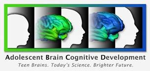
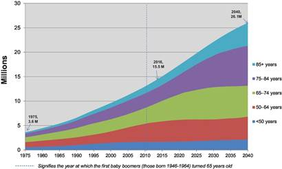

November 2016 Newsletter
Foreword from William Klein, Associate Director of Behavioral Research Program (BRP)
Greetings from the Behavioral Research Program (BRP). We hope you enjoy this November 2016 issue of BRP Scientific News. Our program is pleased to share several items of interest with the cancer-related behavioral research community. In July, the institute awarded six grants related to smoking cessation interventions in lung cancer screening settings. We also have a new funding opportunity on affective and decisional processes in cancer control, as well as a reissued announcement on accelerating the pace of drug abuse research. Please review all of our Funding Opportunity Announcements, especially the six new announcements released earlier this summer.
We’ve included several program-related scientific advances and a number of resources, tools, and upcoming events in this issue. Highlights include a paper on the rising number of older cancer survivors by one of our Cancer Prevention Fellows, Cancer Moonshot updates, and information about a new smoking cessation tool specifically designed for cancer survivors.
This issue of BRP Scientific News also provides scientific highlights from extramural researchers, as well as staffing and career announcements from the Behavioral Research Program (BRP). Members of our research community who wish to continue receiving this semi-annual e-newsletter should include ncidccpsbrpadvances@mail.nih.gov in their address books to ensure proper delivery. Recipients may subscribe or unsubscribe anytime at: https://cancercontrol.cancer.gov/brp/e-newsletter/subscribe.html.
As always, we welcome your feedback.
You can follow us on Twitter at @NCIBehaviors  , where we share scientific updates, training and career opportunities, information about upcoming programming, and new funding opportunities.
, where we share scientific updates, training and career opportunities, information about upcoming programming, and new funding opportunities.
Funding
Funding Opportunities
Please visit the Behavioral Research Grants page or the Division of Cancer Control and Population Sciences (DCCPS) Funding Opportunities page for a complete listing.
| Funding Opportunity Announcements | Program Contact |
|---|---|
| Reissuance: Accelerating the Pace of Drug Abuse Research Using Existing Data PAR-16-234 (R01) |
 Erik Augustson 240-276-6774 erik.augustson@nih.gov |
| Fundamental Mechanisms of Affective and Decisional Processes in Cancer Control PAR-16-380 (R01) |  Rebecca Ferrer 301-852-1167 rebecca.ferrer@nih.gov |
Award Announcement
The National Cancer Institute (NCI) has awarded six grants to support research on the design and implementation of smoking cessation interventions in lung cancer screening settings (RFA-CA-15-011). NCI plans to provide a total of $18.4 million to support the projects for five years. In 2013, the United States Preventive Services Task Force  recommended adults ages 55-80 with a 30 pack-year smoking history (who currently smoke or have quit in the past 15 years) undergo annual low-dose computed tomography (LDCT) lung cancer screening. Smoking cessation treatment during LDCT screening offers the potential to help reduce tobacco use rates and smoking-related morbidity and mortality. Smoking and exposure to secondhand smoke causes more than 440,000 premature deaths from cancer, heart disease, stroke, and lung disease in the U.S. each year.
recommended adults ages 55-80 with a 30 pack-year smoking history (who currently smoke or have quit in the past 15 years) undergo annual low-dose computed tomography (LDCT) lung cancer screening. Smoking cessation treatment during LDCT screening offers the potential to help reduce tobacco use rates and smoking-related morbidity and mortality. Smoking and exposure to secondhand smoke causes more than 440,000 premature deaths from cancer, heart disease, stroke, and lung disease in the U.S. each year.
Awardees Are:
- Paul Cinciripini, Ph.D.
 , University of Texas MD Anderson Cancer Center, Optimizing Effectiveness of Smoking Cessation Intervention During LDCT screening for Lung Cancer (CA207078)
, University of Texas MD Anderson Cancer Center, Optimizing Effectiveness of Smoking Cessation Intervention During LDCT screening for Lung Cancer (CA207078)
- Kristie Foley, Ph.D. , and Caroline Chiles, M.D. , Wake Forest University Health Sciences, Implementation of Smoking Cessation Services within NCI NCORP Community Sites with Organized Lung Cancer Screening Programs (CA207158)
- Taylor Hays, M.D. , and David Midthun, M.D. , Mayo Clinic Rochester, Smoking Cessation in Lung Cancer Screening: Integrated Digital/Clinical Approach (CA207048)
- Jamie Ostroff, Ph.D. , and Donna Shelley, M.D. , Memorial Sloan Kettering Cancer Center, Optimizing Tobacco Treatment for Smokers Seeking Lung Cancer Screening (CA207442)
- Kathryn Taylor, Ph.D. , Georgetown University, Integrating Evidence-Based Smoking Cessation Interventions into Lung Cancer Screening Programs: A Randomized Trial (CA207228)
- Benjamin Toll, Ph.D., Medical University of South Carolina, Gain-framed Messages and NRT Sampling to Promote Smoking Cessation in Lung Cancer Screening Programs (CA207229)
The newly funded grants will advance scientific understanding of the components and characteristics of effective smoking cessation interventions in the lung cancer screening setting and will provide models for the implementation of evidence-based cessation interventions in such screening settings across the nation. To learn more, go to the Tobacco Control Research Branch webpage.
Staff Announcements
Healthcare Delivery Research Program Welcomes New Associate Director
Paul B. Jacobsen, Ph.D., has been named Associate Director of the NCI Division of Cancer Control and Population Science’s (DCCPS) Healthcare Delivery Research Program. He will lead a team whose mission is to serve as a catalyst for the field of health care delivery research and to enhance data resources, measures, and NCI’s grant portfolio in this domain. He will also play a key role in NCI’s collaborations with other agencies and organizations in health services and outcomes research.
Dr. Jacobsen comes to NCI from the Moffitt Cancer Center  , where he served as founding Chair of Moffitt’s Department of Health Outcomes and Behavior and subsequently as Associate Center Director for Population Science. For three decades, his research has focused on patient-centered health outcomes, behavioral aspects of cancer prevention and detection, and supportive care medicine. He has worked closely with the American Society of Clinical Oncology
, where he served as founding Chair of Moffitt’s Department of Health Outcomes and Behavior and subsequently as Associate Center Director for Population Science. For three decades, his research has focused on patient-centered health outcomes, behavioral aspects of cancer prevention and detection, and supportive care medicine. He has worked closely with the American Society of Clinical Oncology  (ASCO), the National Comprehensive Cancer Network
(ASCO), the National Comprehensive Cancer Network  , and other organizations that influence how cancer care is delivered. Based on his contributions, he was appointed to the ASCO Quality Oncology Practice Initiative Steering Committee, which oversees selection and performance of the quality indicators used by practices for self-evaluation and reporting.
, and other organizations that influence how cancer care is delivered. Based on his contributions, he was appointed to the ASCO Quality Oncology Practice Initiative Steering Committee, which oversees selection and performance of the quality indicators used by practices for self-evaluation and reporting.
Robert Croyle, Ph.D., Director of the Division of Cancer Control and Population Sciences, notes, “Dr. Jacobsen’s recruitment reflects NCI’s commitment to evidence-based medicine and increasing quality of care through better science.”
BRP Welcomes Two Cancer Prevention Fellows, One Cancer Research Training Award Fellow
Melinda “Mindy” Krakow, Ph.D., M.P.H., M.A., is a Cancer Prevention Fellow in the Health Communication and Informatics Research Branch. Dr. Krakow is a health communication specialist with expertise in design and evaluation of public health interventions that target cancer-relevant behaviors.
Cendrine Robinson, Ph.D., M.P.H., is a Cancer Prevention Fellow in the Tobacco Control Research Branch. Dr. Robinson research focuses on using online platforms and mobile technology to promote behavior change and smoking cessation among youth and ethnic minorities.
Melissa Trevino, Ph.D., is a Cancer Research Training Award Fellow in the Basic Biobehavioral and Psychological Sciences Branch. Her dissertation investigated the relationship between visual working memory and visual selective attention in survivors of pediatric cancer by implementing basic visual cognition measures in order to fully comprehend the nature of neurocognitive processes among survivors.
BRP Career Opportunities
All positions listed are based in Rockville, Maryland, at NCI’s Shady Grove Campus. Please visit the Career and Training page to learn more.
Program Director, Basic Biobehavioral and Psychological Science Branch (BBPSB): The position provides researchers the opportunity to develop research and funding initiatives, cultivate a diverse portfolio of grant-supported research, lead and participate in transdisciplinary research collaborations, and develop national and international scientific programming. Candidates must have a doctoral or medical degree and specialized research, knowledge, and expertise in clinical, behavioral, or psychological aspects of cancer control. Interested candidates are encouraged to submit a letter of interest, CV, and two representative publications immediately to Paige Green, Ph.D., M.P.H., BBPSB Chief at: ncidccpsbrpadvances@mail.nih.gov. Read the position description »
Program Director, Health Communication and Informatics Research Branch(HCIRB): This position provides a unique opportunity to participate in agenda-setting dialogues that will set the tone for behavioral research in the 21st Century. Goals of the position include assembling an evidence base for the efficacy of mHealth behavioral interventions in cancer prevention and improving patient-provider communication through remote telehealth devices, among others. Program Directors support investigators at domestic and international research institutions and provide expert oversight and administration of extramural grant, cooperative agreement, and contract portfolios. Candidates must have expertise in eHealth, mHealth, or Connected Health. Interested candidates are encouraged to submit a letter of interest, CV, and two representative publications immediately to Bradford Hesse, Ph.D., HCIRB Chief at hesseb@mail.nih.gov. Read the position description here »
Cancer Research Training Award Fellow, Health Behaviors Research Branch (HBRB):The program is currently recruiting for a Health Behaviors Statistical Analysis, Measurement, and Modeling Fellow. The full-time fellowship provides outstanding opportunities for training and professional development in behavioral medicine, statistical analysis, measurement, and data modeling. Fellows interact daily with renowned researchers in public health, behavioral medicine, and cancer prevention. The fellow will function as a member of the HBRB team and will be primarily responsible for data management of a skin-cancer prevention modeling project. Candidates with experience or interest in agent-based modeling and/or background in skin-cancer prevention are particularly encouraged to apply. Interested candidates are encouraged to send application materials to Ms. Kimberly Woodhouse at kimberly.woodhouse@nih.gov. Read the position description here »
Scientific Advances
Moonshot Task Force Releases Report, Blue Ribbon Panel Releases Recommendations
The White House Cancer Moonshot Task Force released a report on October 17, 2016, that outlines plans to accelerate the efforts to prevent, diagnose, and treat cancer. The report describes five strategic goals and lays out a two-year implementation plan for achieving the Cancer Moonshot’s goals. In addition, the Blue Ribbon Panel, an external group of scientific experts, presented its complementary report to the National Cancer Advisory Board on September 7, 2016. The recommendations represent “the merger of science, technology, advocacy, social science, and big data coming together to solve cancer’s greatest challenges,” members of the panel wrote in the report’s introduction. The plans aim to help researchers, scientists, doctors, advocates, and policymakers achieve the ambitious goal of completing a decade’s worth of progress in half the time.
References: Report of the Cancer Moonshot Task Force, 2016. From https://obamawhitehouse.archives.gov/sites/default/files/docs/final_cancer_moonshot_task_force_report_1.pdf
Cancer Moonshot Blue Ribbon Panel Report, 2016. From https://www.cancer.gov/research/key-initiatives/moonshot-cancer-initiative/blue-ribbon-panel/blue-ribbon-panel-report-2016.pdf
Recruitment Begins for Landmark Study of Adolescent Brain Development
The NIH Adolescent Brain Cognitive Development (ABCD) Study, the largest long-term study of brain development and child health in the U.S., started recruiting participants this past September.
The ABCD Study plans to recruit more than 10,000 children and follow their behavioral and biological development through early adulthood. The aim of the study is to gain greater insight into the biological and environmental factors (including the use of tobacco products) that affect brain development and – ultimately – social, behavioral, academic, health and other outcomes.
Reference: NIH News ReleaseRecruitment begins for landmark study of adolescent brain development (2016)
Report: Dramatic Increase in Older Survivors Could Redefine Care Needs, Survivorship Research Priorities

Estimated cancer prevalence by age in the U.S. population from 1975 (216 M) to 2040 (380 M).
Shirley Bluethmann, Ph.D., a Cancer Prevention Fellow in the Behavioral Research Program, and two DCCPS colleagues, Angela Mariotto, Ph.D., and Julia Rowland, Ph.D., used NCI’s Surveillance, Epidemiology, and End Results (SEER) data and U.S. Census data to estimate current and projected prevalence of cancer survivors over age 65 in the coming decades. Owing to the rapidly aging population, sometimes referred to as the silver tsunami, older cancer survivors could comprise close to 75 percent of the 26.1 million cancer survivors projected to be alive in 2040. Using SEER-Medicare linked records, the authors also assessed comorbidity burden based on age and cancer history, finding the strongest association between older age and greater comorbidity burden. The three most prevalent comorbid conditions among survivors were diabetes, congestive heart failure, and COPD. A significant rise in cancer survivors in older age groups will present challenges to the health care system, social services agencies, federal programs, and caregivers.
Reference: Bluethmann, S.M., Mariotto, A.B., & Rowland., J.H. (2016). Anticipating the “Silver Tsunami”: Prevalence Trajectories and Comorbidity Burden among Older Cancer Survivors in the United States. Cancer Epidemiology, Biomarkers and Prevention 25(7); 1029-36. doi: 10.1158/1055-9965.EPI-16-0133
Population Assessment of Tobacco and Health Study Researchers Publish Paper on Design, Methods
Researchers, including Program Director Annette Kaufman in the Tobacco Control Research Branch, recently published a paper that highlights the design, methods, conceptual framework, and objectives for Wave 1 of the Population Assessment of Tobacco and Health (PATH) Study. The study is a nationally representative, longitudinal cohort study of 45,971 adults and youth. Cumulative data generated by the PATH Study on tobacco use and health conditions among the U.S. population will, over time, provide valuable information to enhance the evidence base that informs the Food and Drug Administration’s (FDA) regulatory mission and advances knowledge of the determinants and health impacts of tobacco product use.
Reference: Hyland, A. et. al. (2016). Design and methods of the Population Assessment of Tobacco and Health (PATH) Study. Tobacco Control, Epub ahead of print.
Tobacco Control Researchers Involved in Lung Disease Study
Researchers from the Tobacco Control Research Branch, including Program Director Mark Parascandola, Ph.D., M.P.H., will provide expertise and technical support for an upcoming five-year project that will examine the effects of indoor air pollution and whether the availability of clean cooking fuel significantly improves health. The randomized study will take place in India, Rwanda, Guatemala, and Peru. Half of the 3,200 participants – who must be pregnant to participate – will receive liquefied petroleum gas stoves and a supply of gas, and the other half will continue to use the wood, coal, and other solid fuels that are currently used. The researchers will follow the mothers and children until the children are two and will examine a number of health measures, including hypertension, pneumonia, and birth weight. Investigators will recruit an additional group of older women and will monitor them for cardiopulmonary and metabolic outcomes and cancer-related biomarkers.
"This study will measure the impact of a large-scale clean cook stove intervention in a real-world setting," said Dr. Parascandola. "It will assess the actual adoption and use of the technology as well as the role of environmental factors such as secondhand smoke exposure." NCI and other NIH institutes and centers are funding the project.
Read more about the study »
Reference: NIH Press Release: https://www.nih.gov/news-events/news-releases/nih-contributes-global-effort-prevent-manage-lung-diseases (2016)
Substantial Progress Made in Reducing Smoking?
The U.S. age-adjusted prevalence of adult cigarette smoking has decreased an average of 0.78 percentage points each year since 2009. In this perspective piece in the New England Journal of Medicine, Michael C. Fiore, M.D., M.P.H., M.B.A., associates this marked decline with several initiatives, including raising cigarette taxes, regulating tobacco products, and mandating insurance coverage of counseling and medication treatments for smoking.
Reference: Fiore, M.C. Tobacco Control in the Obama Era – Substantial Progress, Remaining Challenges  (2016). NEJM doi: 10.1056/NEJMp1607850
(2016). NEJM doi: 10.1056/NEJMp1607850
Will Precision Medicine Improve Population Health?
Muin J. Khoury, M.D., Ph.D., and Sandro Galea, M.D., M.P.H., Dr.P.H., discuss factors that make precision medicine more or less unlikely to improve population health. Currently, the precision medicine initiative focuses on drug development for personalized treatment of diseases. By marrying biological, social, and environmental determinants of health, precision medicine can enhance collaborations between medicine and public health to develop targeted approaches to interventions in both individuals and populations.
Reference: Khoury, M.J., Galea, S. (2016). Will Precision Medicine Improve Population Health? JAMA, doi:10.1001/jama.2016.12260
Cancer-Prevention Lifestyle Changes Reduce Cancer Risk and Death
An NCI Cancer Center-supported systematic review of 12 large studies published over the past decade found significant reductions in cancer incidence and death for people who followed health promotion guidelines for diet, physical activity, and healthy body weight compared to those who did not. Funding for this study provided by grant number CA023074.
Reference: Kohler, L.N., Garcia, D.O., Harris, R.B., Oren, E., Roe, D.J., Jacobs, R.T. (2016).Adherence to Diet and Physical Activity Cancer Prevention Guidelines and Cancer Outcomes: A Systematic Review. Cancer Epidemiology, Biomarkers & Prevention 25(7); 1-11. doi: 10.1158/1055-9965.EPI-16-0121
Provider Approach to HPV Vaccine Recommendations Directly Affects Vaccination Rates
Jasmine Tiro, Ph.D., a former Cancer Prevention Fellow and current BRP grantee, along with several colleagues, conducted a pilot study to examine whether clinicians’ approaches to recommending HPV vaccination to patients could be contributing to low vaccination rates in Texas, where nearly half of Texas teens fail to get vaccinated. The study analyzed recorded conversations between parents and providers at six Dallas clinics over a 13-month period and found that HPV vaccination was lowest for those receiving only weak recommendations and highest when providers coupled the recommendation with an evidence-based rationale. Funding for this study provided by grant numbers 1R01CA178414, UL1TR001105, 1P30 CA142543, and R25CA57712.
Reference: Shay, L.A., Street, R.L., Baldwin, A.S., Marks, E.G., Lee, S.C., Higashi, R.T., Skinner, C.S., Fuller, S., Persaud D., Tiro, J.A. (2016). Characterizing safety-net providers’ HPV vaccine recommendations to undecided parents: A pilot study. Patient Education and Counseling 99(9); 1452-60.
Healthy Behaviors Are Cheapest, Most Effective Course in Cancer Prevention
Two studies – funded by DCCPS and the NCI Office of Cancer Genomics – have shown the most common cancers can be prevented in part through lifestyle behaviors. In one study, the researchers used epidemiological and Surveillance, Epidemiology, and End Results (SEER) data, as well as modeling techniques, to show that less than 30 percent of the risk of developing cancer over the lifespan was due to intrinsic risk factors, or “bad luck,” whereas the majority of risk was due to controllable risk factors. The second study analyzed cancer and lifestyle data from two cohort studies and national cancer statistics and focused on lifestyle behaviors such as smoking, drinking alcohol, physical activity, and obesity. The researchers determined that, across most cancers, 20 to 40 percent of new cancer cases – and about half of all cancer deaths – could be prevented by lifestyle factors such as not smoking or drinking alcohol and exercising more. Funding for this study provided by grant numbers 97132, 168409, P01CA87969, UM1CA186107, P01CA55075, and UM1CA167552.
References: Wu, S., Powers S., Zhu, W., Hannun, Y.A. (2016). Substantial contribution of extrinsic risk factors to cancer development. Nature 529; 43-47. doi:10.1038/nature16166
Song, M, Giovannucci E. (2016). Preventable Incidence and Mortality of Carcinoma Associated With Lifestyle Factors Among White Adults in the United States. JAMA Oncology 2(9): 1154-1161. doi:10.1001/jamaoncol.2016.0843
E-Cigarette Use Common in Smoke-free Public Spaces
A BRP-funded study of e-cigarette users showed that nearly three-quarters had vaped in areas where cigarette smoking was not allowed. Young adults between the ages of 18 and 29 were most likely to do so, and people who vaped daily were twice as likely to vape in smoke-free environments compared to those who did so on occasion. The most common venues were bars, restaurants, and worksites. The researchers found that most e-cigarette users did not think e-cigarettes were harmful to themselves or others, so they did not believe the smoking ban should apply. Funding for this study provided by grant number U01CA154280.
Reference: Shi, Y., Cummins, S.E., Zhu, S. (2016) Use of Electronic Cigarettes in Smoke-Free Environments. Tobacco Control BMJ doi:10.1136/tobaccocontrol-2016-053118
Series of Tobacco Control Research Papers Published in Tobacco Control
Investigators in the NCI-funded State and Community Tobacco Control (SCTC) Research Initiative published a new series of research papers highlighting key findings of state and community tobacco control research. The supplement provides practical research to help guide state and community tobacco control policies and practices. Read the papers here  .
.
Reference: Tobacco Control  , October 2016, Volume 25, Supplement 1
, October 2016, Volume 25, Supplement 1
Differing Expectations About Survival Often Found Between Patients and Oncologists
Patients with advanced cancer often hold discordant expectations of survival from that of their oncologists. A group of Health Communication and Informatics Research Branch-funded researchers recently published a paper to examine the degree to which such mismatched perceptions occur among cancer patients and their oncologists. The cross-sectional study included 236 patients and 38 oncologists. Nearly 70 percent of the patient-oncologist pairs reported survival prognosis ratings that were discordant, with nonwhite patients experiencing discordance with their oncologists to a greater degree than white patients. Among those discordant pairs, though, 89 percent of patients did not know that there were differences between their own estimated chances of survival and that of their oncologist. The researchers concluded that a better understanding of what it means to communicate about a person’s prognosis is urgently needed in order to honor that person’s values, preferences, and wishes.
Reference: Gramling, R., Fiscella, K., Xing, G., Hoerger, M., Duberstein, P., Plumb, S., Mohile, S., Fenton, J.J., Tancredi, D.J., Kravitz, R.L., Epstein, R.M. Determinants of Patient-Oncologist Prognostic Discordance in Advanced Cancer. JAMA Oncol. Published online July 14, 2016. doi:10.1001/jamaoncol.2016.1861
Resources, Research Tools, and Events
New Rules for All NIH Clinical Trials
New rules have been established for all NIH clinical trials. The new policies and standard operating procedures will apply to many of the interventional studies managed by DCCPS. (Please see the NIH definition of a clinical trial, NOT-OD-15-015.) The new policies include a requirement for Good Clinical Practice training, new results-reporting requirements to clinicaltrials.gov for all NIH-supported clinical trials, new IRB requirements for multicenter trials, changes to grant applications requiring individual Funding Opportunity Announcements for all NIH-supported clinical trials, and new reporting requirements to NIH program officers for these trials.
Smoking Cessation Tool for Cancer Survivors Released
The Tobacco Control Research Branch, in collaboration with the American Cancer Society, has launched an online tool for cancer survivors. Springboard Beyond Cancer is designed to make it easy for those in treatment and post-treatment to access essential information to help them manage ongoing cancer-related symptoms, deal with stress, improve healthy behaviors, communicate better with health care teams, and seek support from friends and family. Program Director Erik Augustson, Ph.D., hopes the program “helps cancer survivors reduce their disease burden and improve their overall well-being.”
Measures Database Releases Update
The PhenX Toolkit, which offers well-established, broadly validated measures of phenotypes and exposures relevant to investigators in human genomics, epidemiology, and biomedical research, has been updated. Release 16.0 is now available at: https://www.phenxtoolkit.org/  . The release includes an update to the Tobacco Regulatory Research—Core Collections and updated PhenX Publications and Funding Opportunity Announcements.
. The release includes an update to the Tobacco Regulatory Research—Core Collections and updated PhenX Publications and Funding Opportunity Announcements.
BRP Associate Director to Give Keynote Address at American Association for Cancer Research Meeting
William Klein, Ph.D., Associate Director of BRP, has been invited to give the keynote address at the American Association for Cancer Research’s risk prediction meeting. Dr. Klein’s talk, “Maximizing the impact of risk prediction models: Leveraging lessons learned from risk communication research”  will take place from 5:30-6:30 p.m. on Friday, November 18, 2016, at the Rosen Plaza Hotel in Orlando, Florida.
will take place from 5:30-6:30 p.m. on Friday, November 18, 2016, at the Rosen Plaza Hotel in Orlando, Florida.
BRP Staff to Present at Upcoming International Congress of Behavioral Medicine
Several members of the BRP leadership, including William Klein, Ph.D., Jerry Suls, Ph.D., Susan Czajkowski, Ph.D., and Paige Green, Ph.D., M.P.H., will present at the 14th International Congress of Behavioral Medicine, December 7-10, 2016, in Melbourne, Australia. The congress includes keynote addresses, master dialogues/debates, symposia, roundtable discussions, oral and poster presentations, and meetings of special interest groups, among others. The theme of this year’s event is Behavioral Medicine: Making an Impact in the Modern World. Read more about the conference here  .
.
Capstone Held for Network on Biobehavioral Pathways in Cancer
Five years ago, a handful of cancer researchers with training in molecular biology, psychology, public health, and related fields, set out to study the pathways that link psychological, behavioral, and social factors to cancer. Of particular interest was whether stress and other psychological phenomena caused established tumors to progress and metastasize – and whether behaviors such as exercise or social engagement improved cancer outcomes. NCI’s Network on Biobehavioral Pathways in Cancer was convened to support this emerging transdisciplinary research area. On September 16, 2016, investigators gathered at NCI Shady Grove to present research results from the Network’s pilot project program.
Award-Winning Cessation App
NCI and ICF International have won a silver American Advertising Award  (formerly ADDY) for exceptional design of the quitSTART mobile application. The free smartphone app is for teens who want to quit smoking. The app applies details of users’ smoking histories to deliver tailored tips, inspiration, and challenges to help them become smoke-free. The quitSTART app collects population- and individual-level data and is available for use in research studies. Every year, these competitions attract more than 40,000 entries at the local level, making it the advertising industry’s largest and most representative competition.
(formerly ADDY) for exceptional design of the quitSTART mobile application. The free smartphone app is for teens who want to quit smoking. The app applies details of users’ smoking histories to deliver tailored tips, inspiration, and challenges to help them become smoke-free. The quitSTART app collects population- and individual-level data and is available for use in research studies. Every year, these competitions attract more than 40,000 entries at the local level, making it the advertising industry’s largest and most representative competition.
NCI’s Cancer Currents blog also featured the Smokefree.gov website redesign and Daily Challenges and Practice Quit Text Message Programs this past August. Read the blog post here.